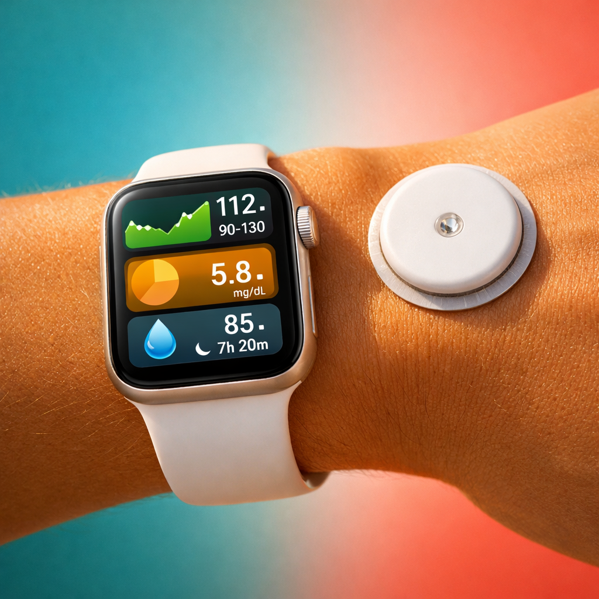
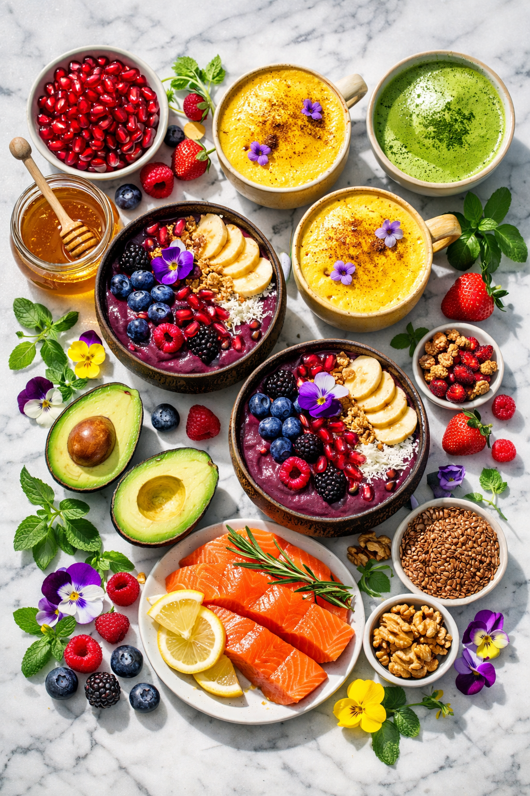

A 12-session live online academy where you'll learn to read your body's signals, interpret longevity research, and build a personal healthspan blueprint — guided by experts, in a small group, grounded in science.


Understand glucose as a signal — not a villain. See how metabolic dysfunction develops silently and what your body is actually telling you.
Go beyond the numbers. Distinguish normal variability from real signals, and learn what to notice versus what to ignore in your glucose data.
Stop thinking in rules. Learn how food order, composition, and context shape your personal response — then build a default meal framework that works for you.
See sleep as metabolic regulation. Recognize emotional glucose spikes. Design circadian rhythm habits and personal stress-regulation strategies.
Learn the evidence hierarchy. Distinguish supplements that matter from noise. Build a personal decision framework for health technology and testing.
Integrate everything into a Personal Longevity Blueprint with concrete actions for nutrition, movement, sleep, stress, and social health — plus a failure plan.
Each session builds on the last. By the end, you won't just know more — you'll think differently about how you age.
This isn't a passive webinar. Every 90 minutes is designed for active learning, real data, and peer discussion.
Share insights from between-session work. Surface questions, breakthroughs, and challenges from the previous week.
Visual walkthroughs, real data, case studies, and myth-dismantling. The core science and frameworks for this session's topic.
Breakout groups, meal deconstruction, CGM data review. Apply what you just learned to your own life and data.
Peer coaching, personal experiments, troubleshooting. Refine your approach with real-time feedback from the group.
Between-session work: lifestyle logs, food experiments, CGM observation, sleep audits, and blueprint-building.
A team of scientists, physicians, and longevity coaches who bridge research and real life.
Long-time longevity educator with deep expertise in aging science, glucose management, and lifestyle optimization. Leads workshops, retreats, and longevity strategy programs. Course creator and lead facilitator.
Physician and healthspan coaching specialist who helps individuals optimize lifestyle through metabolic health, stress management, sleep quality, and daily habit design — grounded in longevity science, not expensive clinical interventions.
Trained in age-related biology, lifestyle optimization, and behavior change through xLongevity's certification program. Specialists in applying longevity science to real-world coaching and group facilitation.
No prerequisites at all. The course is designed for curious adults (35–65) who want to understand their body better. You'll need a computer with a webcam for live sessions, a stable internet connection, and a willingness to participate actively. No prior science or health background required.
A CGM is recommended but not required. Several sessions include CGM data analysis — if you wear one, you'll work with your own data. If not, we provide anonymized datasets so you can fully participate in every exercise. We'll share guidance on CGM options during onboarding.
Plan for approximately 3 hours per week: 90 minutes for the live session plus 60–90 minutes for between-session work (lifestyle logs, food experiments, CGM observation, or blueprint building). The between-session work is designed to integrate into your daily life, not add to it.
No. This is a science-based educational program, not a medical service. We teach you to understand longevity research, interpret your own data, and build healthy habits. We don't diagnose conditions, prescribe treatments, or replace your doctor. Always consult a healthcare professional for medical decisions.
We understand life happens. All live sessions are recorded and made available within 24 hours. However, the course is designed for synchronous participation — breakout groups, peer coaching, and group discussions are core to the experience. We recommend attending at least 10 of 12 sessions live.
Each cohort is limited to 8–15 participants. This is intentional: small enough for everyone to be seen and heard, large enough for rich discussion and diverse perspectives. Breakout sessions use groups of 2–3 people for deeper personal work.
Cohort dates and pricing are shared during the application process. Apply below and we'll send you all the details, including scheduling options, pricing tiers, and what's included. Spots are limited due to the small group format.
12 sessions. Small group. Expert-led. The most structured, science-grounded longevity education you'll find. Apply for the next cohort and we'll send you everything you need to know.